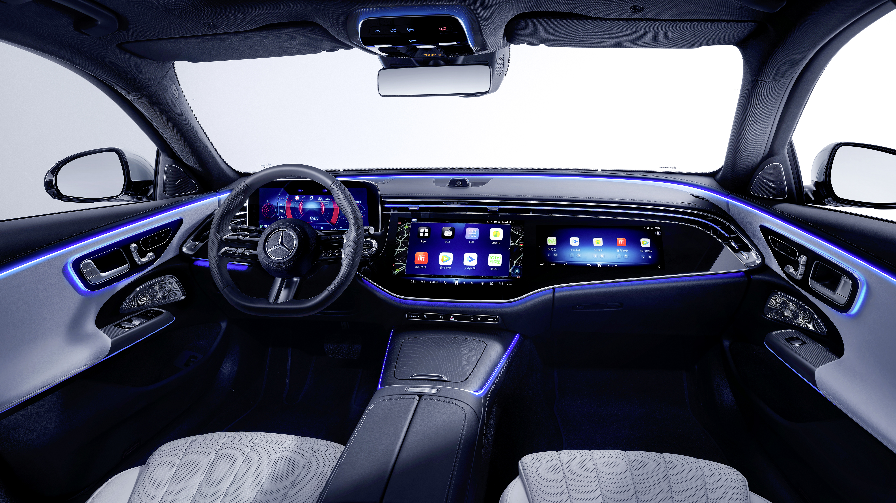
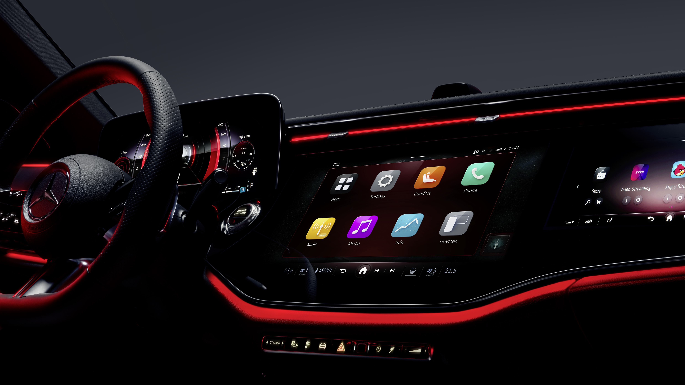

第一代中国独立车机，如何从零定义本土系统？
奔驰第一代面向中国市场独立定义的车机系统。过去中国车型的车机是欧版本地化，翻译、换地图、加几个本土 App。但中国用户对车机的使用深度已经远超"国际版加中文"能承载的范围。E300、GLC、C-Class 作为核心走量车型，需要一套从底层到交互逻辑都重新为本土市场思考的方案。适配 14.4 寸和 11.9 寸两种屏幕。
为中国用户的使用习惯重新设计
中国用户和欧洲用户使用舒适性功能的方式差异很大。欧洲用户偏好"设一次忘掉"，中国用户使用频率高得多：冬天频繁开关座椅加热、习惯性切换氛围灯、经常调整空调模式。这意味着入口层级、操作路径、反馈速度都要重新来。
座椅做了完整的舒适管理：位置调节、加热平衡、按摩、腰托、腿托、动态座椅、基于身高的自动定位、位置记忆。调节→享受→记忆→恢复，一条线走通。
空调有几个中国特殊需求：极速降温/升温是刚需（夏天暴晒上车、冬天冷启动），必须一键直达。余热利用对混动/纯电续航有直接影响，中国用户对此的感知远高于欧洲。空气质量在国内的空气环境下是实用功能而不是配置表上的一行字。
灯光方面，中国用户把氛围灯当作随时切换的表达方式而非一次性装饰。随音悦动、动态多色是真正的高频功能。数字大灯、欢迎投影承载仪式感和社交展示。
首页 3D 车模是一个关键的产品决策。中国用户习惯首页直接完成操作而不是进二级页面，把天窗、遮阳帘、车窗的控制放在首页车辆模型上，看到哪里点哪里。

快速入口与多路径触达
入口设计上，高频功能必须最短路径触达。首页 Dock 栏直接放了空调温度和氛围灯入口，不进子页面就能完成最高频操作。极速降温/升温做成一键触发。3D 车模让天窗/车窗控制从"设置→车辆→车窗"三级路径变成首页一步点击。
分类逻辑上，欧版按硬件域组织（座椅归座椅、空调归空调），但中国用户更偏向"在哪方便就在哪操作"。我们在功能域清晰的基础上做了多入口，Dock 快捷栏、3D 车模、功能页面本身都可以触达同一个操作，不强制唯一路径。
反馈即时感上，3D 车模做了实时联动，点击车窗后模型上对应窗户高亮并播放动画，操作结果直接可见。座椅加热/通风状态图标即时变化。批量操作（全开/全关）有 loading 状态，不让用户面对无反馈的等待。
视觉上两种尺寸不是等比缩放，大屏外露更多快捷操作，小屏精简到最高频的那个。3D 车模的光照、高亮色、材质和 2D 界面配色保持统一体系，不会有"贴了个模型上去"的割裂感。

首个 2D/3D 设计师协作规范
3D 车模的引入带来了一个新问题：2D 和 3D 设计师怎么配合。之前的痛点很明确，给 3D 的输入不清晰导致反工；PM 信息不全；需求方不明确；输入颗粒度不统一；设计阶段看不到车模视角；并行开发交付慢；Ticket 流转后追踪不了工作量。
我沉淀了公司内部第一份 2D/3D 合作规范。核心流程：PRD Review（3D 需求前置澄清）→ UX Design（UX 和 3D 联合确定车辆角度/镜头/动画触发）→ UI & Shader（UI 提供情绪板/竞品/纹理参考，明确 3D 区域规范）→ Joint Alignment（一致性检查，签发 Storyboard）→ Joint Grooming（2D/3D/开发/PM 对齐交付）。还定义了 3D 需求必含字段，已在团队推广复用。